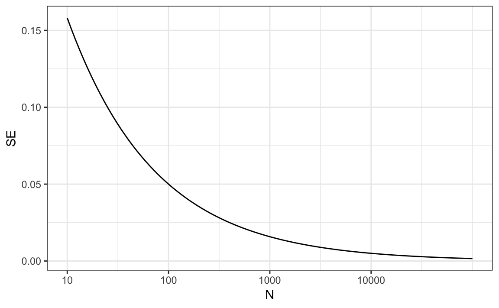
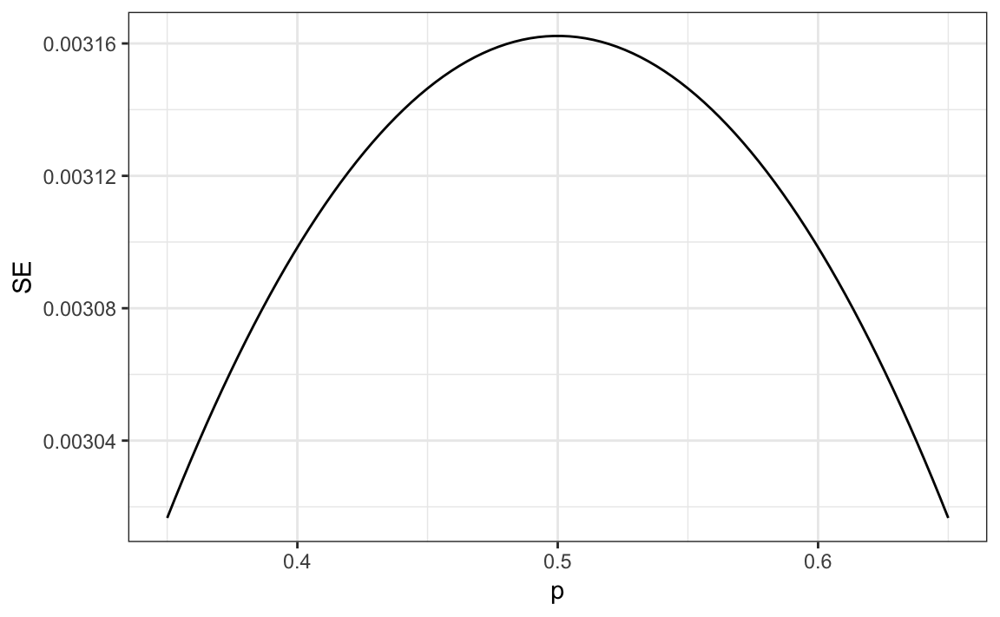
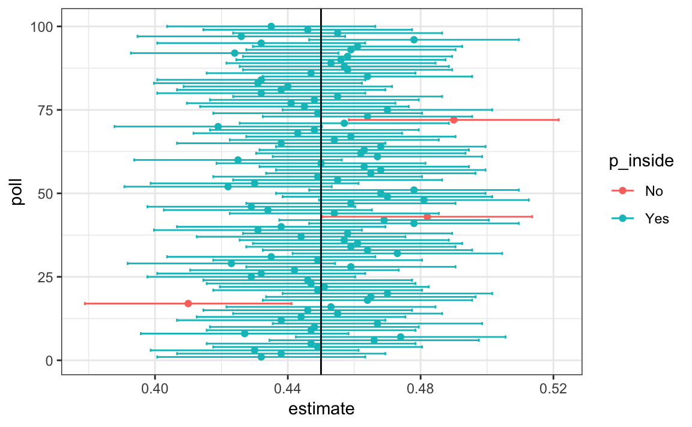

Chapter 16 Statistical inference
In Chapter 17 we will describe, in some detail, how poll aggregators such as FiveThirtyEight use data to predict election outcomes. To understand how they do this, we first need to learn the basics of Statistical Inference, the part of statistics that helps distinguish patterns arising from signal from those arising from chance. Statistical inference is a broad topic and here we go over the very basics using polls as a motivating example. To describe the concepts, we complement the mathematical formulas with Monte Carlo simulations and R code.
16.1 Polls
Opinion polling has been conducted since the 19th century. The general goal is to describe the opinions held by a specific population on a given set of topics. In recent times, these polls have been pervasive during presidential elections. Polls are useful when interviewing every member of a particular population is logistically impossible. The general strategy is to interview a smaller group, chosen at random, and then infer the opinions of the entire population from the opinions of the smaller group. Statistical theory is used to justify the process. This theory is referred to as inference and it is the main topic of this chapter.
Perhaps the best known opinion polls are those conducted to determine which candidate is preferred by voters in a given election. Political strategists make extensive use of polls to decide, among other things, how to invest resources. For example, they may want to know in which geographical locations to focus their “get out the vote†efforts.
Elections are a particularly interesting case of opinion polls because the actual opinion of the entire population is revealed on election day. Of course, it costs millions of dollars to run an actual election which makes polling a cost effective strategy for those that want to forecast the results.
Although typically the results of these polls are kept private, similar polls are conducted by news organizations because results tend to be of interest to the general public and made public. We will eventually be looking at such data.
Real Clear Politics55 is an example of a news aggregator that organizes and publishes poll results. For example, they present the following poll results reporting estimates of the popular vote for the 2016 presidential election56:
| Poll | Date | Sample | MoE | Clinton | Trump | Spread |
|---|---|---|---|---|---|---|
| Final Results | – | – | – | 48.2 | 46.1 | Clinton +2.1 |
| RCP Average | 11/1 - 11/7 | – | – | 46.8 | 43.6 | Clinton +3.2 |
| Bloomberg | 11/4 - 11/6 | 799 LV | 3.5 | 46.0 | 43.0 | Clinton +3 |
| IBD | 11/4 - 11/7 | 1107 LV | 3.1 | 43.0 | 42.0 | Clinton +1 |
| Economist | 11/4 - 11/7 | 3669 LV | – | 49.0 | 45.0 | Clinton +4 |
| LA Times | 11/1 - 11/7 | 2935 LV | 4.5 | 44.0 | 47.0 | Trump +3 |
| ABC | 11/3 - 11/6 | 2220 LV | 2.5 | 49.0 | 46.0 | Clinton +3 |
| FOX News | 11/3 - 11/6 | 1295 LV | 2.5 | 48.0 | 44.0 | Clinton +4 |
| Monmouth | 11/3 - 11/6 | 748 LV | 3.6 | 50.0 | 44.0 | Clinton +6 |
| NBC News | 11/3 - 11/5 | 1282 LV | 2.7 | 48.0 | 43.0 | Clinton +5 |
| CBS News | 11/2 - 11/6 | 1426 LV | 3.0 | 47.0 | 43.0 | Clinton +4 |
| Reuters | 11/2 - 11/6 | 2196 LV | 2.3 | 44.0 | 39.0 | Clinton +5 |
Although in the United States the popular vote does not determine the result of the presidential election, we will use it as an illustrative and simple example of how well polls work. Forecasting the election is a more complex process since it involves combining results from 50 states and DC and we describe it in Section 17.8.
Let’s make some observations about the table above. First, note that different polls, all taken days before the election, report a different spread: the estimated difference between support for the two candidates. Notice also that the reported spreads hover around what ended up being the actual result: Clinton won the popular vote by 2.1%. We also see a column titled MoE which stands for margin of error.
In this section, we will show how the probability concepts we learned in the previous chapter can be applied to develop the statistical approaches that make polls an effective tool. We will learn the statistical concepts necessary to define estimates and margins of errors, and show how we can use these to forecast final results relatively well and also provide an estimate of the precision of our forecast. Once we learn this, we will be able to understand two concepts that are ubiquitous in data science: confidence intervals and p-values. Finally, to understand probabilistic statements about the probability of a candidate winning, we will have to learn about Bayesian modeling. In the final sections, we put it all together to recreate the simplified version of the FiveThirtyEight model and apply it to the 2016 election.
We start by connecting probability theory to the task of using polls to learn about a population.
16.1.1 The sampling model for polls
To help us understand the connection between polls and what we have learned, let’s construct a similar situation to the one pollsters face. To mimic the challenge real pollsters face in terms of competing with other pollsters for media attention, we will use an urn full of beads to represent voters and pretend we are competing for a $25 dollar prize. The challenge is to guess the spread between the proportion of blue and red beads in this urn (in this case, a pickle jar):

Before making a prediction, you can take a sample (with replacement) from the urn. To mimic the fact that running polls is expensive, it costs you $0.10 per each bead you sample. Therefore, if your sample size is 250, and you win, you will break even since you will pay $25 to collect your $25 prize. Your entry into the competition can be an interval. If the interval you submit contains the true proportion, you get half what you paid and pass to the second phase of the competition. In the second phase, the entry with the smallest interval is selected as the winner.
The dslabs package includes a function that shows a random draw from this urn:
library(tidyverse)
library(dslabs)
take_poll(25)
Think about how you would construct your interval based on the data shown above.
We have just described a simple sampling model for opinion polls. The beads inside the urn represent the individuals that will vote on election day. Those that will vote for the Republican candidate are represented with red beads and the Democrats with the blue beads. For simplicity, assume there are no other colors. That is, that there are just two parties: Republican and Democratic.
16.2 Populations, samples, parameters, and estimates
We want to predict the proportion of blue beads in the urn. Let’s call this quantity \(p\), which then tells us the proportion of red beads \(1-p\), and the spread \(p - (1-p)\), which simplifies to \(2p - 1\).
In statistical textbooks, the beads in the urn are called the population. The proportion of blue beads in the population \(p\) is called a parameter. The 25 beads we see in the previous plot are called a sample. The task of statistical inference is to predict the parameter \(p\) using the observed data in the sample.
Can we do this with the 25 observations above? It is certainly informative. For example, given that we see 13 red and 12 blue beads, it is unlikely that \(p\) > .9 or \(p\) < .1. But are we ready to predict with certainty that there are more red beads than blue in the jar?
We want to construct an estimate of \(p\) using only the information we observe. An estimate should be thought of as a summary of the observed data that we think is informative about the parameter of interest. It seems intuitive to think that the proportion of blue beads in the sample \(0.48\) must be at least related to the actual proportion \(p\). But do we simply predict \(p\) to be 0.48? First, remember that the sample proportion is a random variable. If we run the command take_poll(25) four times, we get a different answer each time, since the sample proportion is a random variable.

Note that in the four random samples shown above, the sample proportions range from 0.44 to 0.60. By describing the distribution of this random variable, we will be able to gain insights into how good this estimate is and how we can make it better.
16.2.1 The sample average
Conducting an opinion poll is being modeled as taking a random sample from an urn. We are proposing the use of the proportion of blue beads in our sample as an estimate of the parameter \(p\). Once we have this estimate, we can easily report an estimate for the spread \(2p-1\), but for simplicity we will illustrate the concepts for estimating \(p\). We will use our knowledge of probability to defend our use of the sample proportion and quantify how close we think it is from the population proportion \(p\).
We start by defining the random variable \(X\) as: \(X=1\) if we pick a blue bead at random and \(X=0\) if it is red. This implies that the population is a list of 0s and 1s. If we sample \(N\) beads, then the average of the draws \(X_1, \dots, X_N\) is equivalent to the proportion of blue beads in our sample. This is because adding the \(X\)s is equivalent to counting the blue beads and dividing this count by the total \(N\) is equivalent to computing a proportion. We use the symbol \(\bar{X}\) to represent this average. In general, in statistics textbooks a bar on top of a symbol means the average. The theory we just learned about the sum of draws becomes useful because the average is a sum of draws multiplied by the constant \(1/N\):
\[\bar{X} = 1/N \times \sum_{i=1}^N X_i\]
For simplicity, let’s assume that the draws are independent: after we see each sampled bead, we return it to the urn. In this case, what do we know about the distribution of the sum of draws? First, we know that the expected value of the sum of draws is \(N\) times the average of the values in the urn. We know that the average of the 0s and 1s in the urn must be \(p\), the proportion of blue beads.
Here we encounter an important difference with what we did in the Probability chapter: we don’t know what is in the urn. We know there are blue and red beads, but we don’t know how many of each. This is what we want to find out: we are trying to estimate \(p\).
16.2.2 Parameters
Just like we use variables to define unknowns in systems of equations, in statistical inference we define parameters to define unknown parts of our models. In the urn model which we are using to mimic an opinion poll, we do not know the proportion of blue beads in the urn. We define the parameters \(p\) to represent this quantity. \(p\) is the average of the urn because if we take the average of the 1s (blue) and 0s (red), we get the proportion of blue beads. Since our main goal is figuring out what is \(p\), we are going to estimate this parameter.
The ideas presented here on how we estimate parameters, and provide insights into how good these estimates are, extrapolate to many data science tasks. For example, we may want to determine the difference in health improvement between patients receiving treatment and a control group. We may ask, what are the health effects of smoking on a population? What are the differences in racial groups of fatal shootings by police? What is the rate of change in life expectancy in the US during the last 10 years? All these questions can be framed as a task of estimating a parameter from a sample.
16.2.3 Polling versus forecasting
Before we continue, let’s make an important clarification related to the practical problem of forecasting the election. If a poll is conducted four months before the election, it is estimating the \(p\) for that moment and not for election day. The \(p\) for election night might be different since people’s opinions fluctuate through time. The polls provided the night before the election tend to be the most accurate since opinions don’t change that much in a day. However, forecasters try to build tools that model how opinions vary across time and try to predict the election night results taking into consideration the fact that opinions fluctuate. We will describe some approaches for doing this in a later section.
16.2.4 Properties of our estimate: expected value and standard error
To understand how good our estimate is, we will describe the statistical properties of the random variable defined above: the sample proportion \(\bar{X}\). Remember that \(\bar{X}\) is the sum of independent draws so the rules we covered in the probability chapter apply.
Using what we have learned, the expected value of the sum \(N\bar{X}\) is \(N \times\) the average of the urn, \(p\). So dividing by the non-random constant \(N\) gives us that the expected value of the average \(\bar{X}\) is \(p\). We can write it using our mathematical notation:
\[ \mbox{E}(\bar{X}) = p \]
We can also use what we learned to figure out the standard error: the standard error of the sum is \(\sqrt{N} \times\) the standard deviation of the urn. Can we compute the standard error of the urn? We learned a formula that tells us that it is \((1-0) \sqrt{p (1-p)}\) = \(\sqrt{p (1-p)}\). Because we are dividing the sum by \(N\), we arrive at the following formula for the standard error of the average:
\[ \mbox{SE}(\bar{X}) = \sqrt{p(1-p)/N} \]
This result reveals the power of polls. The expected value of the sample proportion \(\bar{X}\) is the parameter of interest \(p\) and we can make the standard error as small as we want by increasing \(N\). The law of large numbers tells us that with a large enough poll, our estimate converges to \(p\).
If we take a large enough poll to make our standard error about 1%, we will be quite certain about who will win. But how large does the poll have to be for the standard error to be this small?
One problem is that we do not know \(p\), so we can’t compute the standard error. However, for illustrative purposes, let’s assume that \(p=0.51\) and make a plot of the standard error versus the sample size \(N\):

From the plot we see that we would need a poll of over 10,000 people to get the standard error that low. We rarely see polls of this size due in part to costs. From the Real Clear Politics table, we learn that the sample sizes in opinion polls range from 500-3,500 people. For a sample size of 1,000 and \(p=0.51\), the standard error is:
sqrt(p*(1-p))/sqrt(1000)
#> [1] 0.0158or 1.5 percentage points. So even with large polls, for close elections, \(\bar{X}\) can lead us astray if we don’t realize it is a random variable. Nonetheless, we can actually say more about how close we get the \(p\) and we do that in Section 16.4.
16.3 Exercises
1. Suppose you poll a population in which a proportion \(p\) of voters are Democrats and \(1-p\) are Republicans. Your sample size is \(N=25\). Consider the random variable \(S\) which is the total number of Democrats in your sample. What is the expected value of this random variable? Hint: it’s a function of \(p\).
2. What is the standard error of \(S\) ? Hint: it’s a function of \(p\).
3. Consider the random variable \(S/N\). This is equivalent to the sample average, which we have been denoting as \(\bar{X}\). What is the expected value of the \(\bar{X}\)? Hint: it’s a function of \(p\).
4. What is the standard error of \(\bar{X}\)? Hint: it’s a function of \(p\).
5. Write a line of code that gives you the standard error se for the problem above for several values of \(p\), specifically for p <- seq(0, 1, length = 100). Make a plot of se versus p.
6. Copy the code above and put it inside a for-loop to make the plot for \(N=25\), \(N=100\), and \(N=1000\).
7. If we are interested in the difference in proportions, \(p - (1-p)\), our estimate is \(d = \bar{X} - (1-\bar{X})\). Use the rules we learned about sums of random variables and scaled random variables to derive the expected value of \(d\).
8. What is the standard error of \(d\)?
9. If the actual \(p=.45\), it means the Republicans are winning by a relatively large margin since \(d= -.1\), which is a 10% margin of victory. In this case, what is the standard error of \(2\hat{X}-1\) if we take a sample of \(N=25\)?
10. Given the answer to 9, which of the following best describes your strategy of using a sample size of \(N=25\)?
- The expected value of our estimate \(2\bar{X}-1\) is \(d\), so our prediction will be right on.
- Our standard error is larger than the difference, so the chances of \(2\bar{X}-1\) being positive and throwing us off were not that small. We should pick a larger sample size.
- The difference is 10% and the standard error is about 0.2, therefore much smaller than the difference.
- Because we don’t know \(p\), we have no way of knowing that making \(N\) larger would actually improve our standard error.
16.4 Central Limit Theorem in practice
The CLT tells us that the distribution function for a sum of draws is approximately normal. We also learned that dividing a normally distributed random variable by a constant is also a normally distributed variable. This implies that the distribution of \(\bar{X}\) is approximately normal.
In summary, we have that \(\bar{X}\) has an approximately normal distribution with expected value \(p\) and standard error \(\sqrt{p(1-p)/N}\).
Now how does this help us? Suppose we want to know what is the probability that we are within 1% from \(p\). We are basically asking what is
\[ \mbox{Pr}(| \bar{X} - p| \leq .01) \] which is the same as:
\[ \mbox{Pr}(\bar{X}\leq p + .01) - \mbox{Pr}(\bar{X} \leq p - .01) \]
Can we answer this question? We can use the mathematical trick we learned in the previous chapter. Subtract the expected value and divide by the standard error to get a standard normal random variable, call it \(Z\), on the left. Since \(p\) is the expected value and \(\mbox{SE}(\bar{X}) = \sqrt{p(1-p)/N}\) is the standard error we get:
\[ \mbox{Pr}\left(Z \leq \frac{ \,.01} {\mbox{SE}(\bar{X})} \right) - \mbox{Pr}\left(Z \leq - \frac{ \,.01} {\mbox{SE}(\bar{X})} \right) \]
One problem we have is that since we don’t know \(p\), we don’t know \(\mbox{SE}(\bar{X})\). But it turns out that the CLT still works if we estimate the standard error by using \(\bar{X}\) in place of \(p\). We say that we plug-in the estimate. Our estimate of the standard error is therefore:
\[ \hat{\mbox{SE}}(\bar{X})=\sqrt{\bar{X}(1-\bar{X})/N} \] In statistics textbooks, we use a little hat to denote estimates. The estimate can be constructed using the observed data and \(N\).
Now we continue with our calculation, but dividing by \(\hat{\mbox{SE}}(\bar{X})=\sqrt{\bar{X}(1-\bar{X})/N})\) instead. In our first sample we had 12 blue and 13 red so \(\bar{X} = 0.48\) and our estimate of standard error is:
x_hat <- 0.48
se <- sqrt(x_hat*(1-x_hat)/25)
se
#> [1] 0.0999And now we can answer the question of the probability of being close to \(p\). The answer is:
pnorm(0.01/se) - pnorm(-0.01/se)
#> [1] 0.0797Therefore, there is a small chance that we will be close. A poll of only \(N=25\) people is not really very useful, at least not for a close election.
Earlier we mentioned the margin of error. Now we can define it because it is simply two times the standard error, which we can now estimate. In our case it is:
1.96*se
#> [1] 0.196Why do we multiply by 1.96? Because if you ask what is the probability that we are within 1.96 standard errors from \(p\), we get:
\[ \mbox{Pr}\left(Z \leq \, 1.96\,\mbox{SE}(\bar{X}) / \mbox{SE}(\bar{X}) \right) - \mbox{Pr}\left(Z \leq - 1.96\, \mbox{SE}(\bar{X}) / \mbox{SE}(\bar{X}) \right) \] which is:
\[ \mbox{Pr}\left(Z \leq 1.96 \right) - \mbox{Pr}\left(Z \leq - 1.96\right) \]
which we know is about 95%:
pnorm(1.96)-pnorm(-1.96)
#> [1] 0.95Hence, there is a 95% probability that \(\bar{X}\) will be within \(1.96\times \hat{SE}(\bar{X})\), in our case within about 0.2, of \(p\). Note that 95% is somewhat of an arbitrary choice and sometimes other percentages are used, but it is the most commonly used value to define margin of error. We often round 1.96 up to 2 for simplicity of presentation.
In summary, the CLT tells us that our poll based on a sample size of \(25\) is not very useful. We don’t really learn much when the margin of error is this large. All we can really say is that the popular vote will not be won by a large margin. This is why pollsters tend to use larger sample sizes.
From the table above, we see that typical sample sizes range from 700 to 3500. To see how this gives us a much more practical result, notice that if we had obtained a \(\bar{X}\)=0.48 with a sample size of 2,000, our standard error \(\hat{\mbox{SE}}(\bar{X})\) would have been 0.011. So our result is an estimate of 48% with a margin of error of 2%. In this case, the result is much more informative and would make us think that there are more red balls than blue. Keep in mind, however, that this is hypothetical. We did not take a poll of 2,000 since we don’t want to ruin the competition.
16.4.1 A Monte Carlo simulation
Suppose we want to use a Monte Carlo simulation to corroborate the tools we have built using probability theory. To create the simulation, we would write code like this:
B <- 10000
N <- 1000
x_hat <- replicate(B, {
x <- sample(c(0,1), size = N, replace = TRUE, prob = c(1-p, p))
mean(x)
})The problem is, of course, we don’t know p. We could construct an urn like the one pictured above and run an analog (without a computer) simulation. It would take a long time, but you could take 10,000 samples, count the beads and keep track of the proportions of blue. We can use the function take_poll(n=1000) instead of drawing from an actual urn, but it would still take time to count the beads and enter the results.
One thing we therefore do to corroborate theoretical results is to pick one or several values of p and run the simulations. Let’s set p=0.45. We can then simulate a poll:
p <- 0.45
N <- 1000
x <- sample(c(0,1), size = N, replace = TRUE, prob = c(1-p, p))
x_hat <- mean(x)In this particular sample, our estimate is x_hat. We can use that code to do a Monte Carlo simulation:
B <- 10000
x_hat <- replicate(B, {
x <- sample(c(0,1), size = N, replace = TRUE, prob = c(1-p, p))
mean(x)
})To review, the theory tells us that \(\bar{X}\) is approximately normally distributed, has expected value \(p=\) 0.45 and standard error \(\sqrt{p(1-p)/N}\) = 0.016. The simulation confirms this:
mean(x_hat)
#> [1] 0.45
sd(x_hat)
#> [1] 0.0157A histogram and qq-plot confirm that the normal approximation is accurate as well:

Of course, in real life we would never be able to run such an experiment because we don’t know \(p\). But we could run it for various values of \(p\) and \(N\) and see that the theory does indeed work well for most values. You can easily do this by re-running the code above after changing p and N.
16.4.2 The spread
The competition is to predict the spread, not the proportion \(p\). However, because we are assuming there are only two parties, we know that the spread is \(p - (1-p) = 2p - 1\). As a result, everything we have done can easily be adapted to an estimate of \(2p - 1\). Once we have our estimate \(\bar{X}\) and \(\hat{\mbox{SE}}(\bar{X})\), we estimate the spread with \(2\bar{X} - 1\) and, since we are multiplying by 2, the standard error is \(2\hat{\mbox{SE}}(\bar{X})\). Note that subtracting 1 does not add any variability so it does not affect the standard error.
For our 25 item sample above, our estimate \(p\) is .48 with margin of error .20 and our estimate of the spread is 0.04 with margin of error .40. Again, not a very useful sample size. However, the point is that once we have an estimate and standard error for \(p\), we have it for the spread \(2p-1\).
16.4.3 Bias: why not run a very large poll?
For realistic values of \(p\), say from 0.35 to 0.65, if we run a very large poll with 100,000 people, theory tells us that we would predict the election perfectly since the largest possible margin of error is around 0.3%:

One reason is that running such a poll is very expensive. Another possibly more important reason is that theory has its limitations. Polling is much more complicated than picking beads from an urn. Some people might lie to pollsters and others might not have phones. But perhaps the most important way an actual poll differs from an urn model is that we actually don’t know for sure who is in our population and who is not. How do we know who is going to vote? Are we reaching all possible voters? Hence, even if our margin of error is very small, it might not be exactly right that our expected value is \(p\). We call this bias. Historically, we observe that polls are indeed biased, although not by that much. The typical bias appears to be about 1-2%. This makes election forecasting a bit more interesting and we will talk about how to model this in a later chapter.
16.5 Exercises
1. Write an urn model function that takes the proportion of Democrats \(p\) and the sample size \(N\) as arguments and returns the sample average if Democrats are 1s and Republicans are 0s. Call the function take_sample.
2. Now assume p <- 0.45 and that your sample size is \(N=100\). Take a sample 10,000 times and save the vector of mean(X) - p into an object called errors. Hint: use the function you wrote for exercise 1 to write this in one line of code.
3. The vector errors contains, for each simulated sample, the difference between the actual \(p\) and our estimate \(\bar{X}\). We refer to this difference as the error. Compute the average and make a histogram of the errors generated in the Monte Carlo simulation and select which of the following best describes their distributions:
mean(errors)
hist(errors)- The errors are all about 0.05.
- The errors are all about -0.05.
- The errors are symmetrically distributed around 0.
- The errors range from -1 to 1.
4. The error \(\bar{X}-p\) is a random variable. In practice, the error is not observed because we do not know \(p\). Here we observe it because we constructed the simulation. What is the average size of the error if we define the size by taking the absolute value \(\mid \bar{X} - p \mid\) ?
5. The standard error is related to the typical size of the error we make when predicting. We say size because we just saw that the errors are centered around 0, so thus the average error value is 0. For mathematical reasons related to the Central Limit Theorem, we actually use the standard deviation of errors rather than the average of the absolute values to quantify the typical size. What is this standard deviation of the errors?
6. The theory we just learned tells us what this standard deviation is going to be because it is the standard error of \(\bar{X}\). What does theory tell us is the standard error of \(\bar{X}\) for a sample size of 100?
7. In practice, we don’t know \(p\), so we construct an estimate of the theoretical prediction based by plugging in \(\bar{X}\) for \(p\). Compute this estimate. Set the seed at 1 with set.seed(1).
8. Note how close the standard error estimates obtained from the Monte Carlo simulation (exercise 5), the theoretical prediction (exercise 6), and the estimate of the theoretical prediction (exercise 7) are. The theory is working and it gives us a practical approach to knowing the typical error we will make if we predict \(p\) with \(\bar{X}\). Another advantage that the theoretical result provides is that it gives an idea of how large a sample size is required to obtain the precision we need. Earlier we learned that the largest standard errors occur for \(p=0.5\). Create a plot of the largest standard error for \(N\) ranging from 100 to 5,000. Based on this plot, how large does the sample size have to be to have a standard error of about 1%?
- 100
- 500
- 2,500
- 4,000
9. For sample size \(N=100\), the central limit theorem tells us that the distribution of \(\bar{X}\) is:
- practically equal to \(p\).
- approximately normal with expected value \(p\) and standard error \(\sqrt{p(1-p)/N}\).
- approximately normal with expected value \(\bar{X}\) and standard error \(\sqrt{\bar{X}(1-\bar{X})/N}\).
- not a random variable.
10. Based on the answer from exercise 8, the error \(\bar{X} - p\) is:
- practically equal to 0.
- approximately normal with expected value \(0\) and standard error \(\sqrt{p(1-p)/N}\).
- approximately normal with expected value \(p\) and standard error \(\sqrt{p(1-p)/N}\).
- not a random variable.
11. To corroborate your answer to exercise 9, make a qq-plot of the errors you generated in exercise 2 to see if they follow a normal distribution.
12. If \(p=0.45\) and \(N=100\) as in exercise 2, use the CLT to estimate the probability that \(\bar{X}>0.5\). You can assume you know \(p=0.45\) for this calculation.
13. Assume you are in a practical situation and you don’t know \(p\). Take a sample of size \(N=100\) and obtain a sample average of \(\bar{X} = 0.51\). What is the CLT approximation for the probability that your error is equal to or larger than 0.01?
16.6 Confidence intervals
Confidence intervals are a very useful concept widely employed by data analysts. A version of these that are commonly seen come from the ggplot geometry geom_smooth. Here is an example using a temperature dataset available in R:
In the Machine Learning part we will learn how the curve is formed, but for now consider the shaded area around the curve. This is created using the concept of confidence intervals.
In our earlier competition, you were asked to give an interval. If the interval you submitted includes the \(p\), you get half the money you spent on your “poll†back and pass to the next stage of the competition. One way to pass to the second round is to report a very large interval. For example, the interval \([0,1]\) is guaranteed to include \(p\). However, with an interval this big, we have no chance of winning the competition. Similarly, if you are an election forecaster and predict the spread will be between -100% and 100%, you will be ridiculed for stating the obvious. Even a smaller interval, such as saying the spread will be between -10 and 10%, will not be considered serious.
On the other hand, the smaller the interval we report, the smaller our chances are of winning the prize. Likewise, a bold pollster that reports very small intervals and misses the mark most of the time will not be considered a good pollster. We want to be somewhere in between.
We can use the statistical theory we have learned to compute the probability of any given interval including \(p\). If we are asked to create an interval with, say, a 95% chance of including \(p\), we can do that as well. These are called 95% confidence intervals.
When a pollster reports an estimate and a margin of error, they are, in a way, reporting a 95% confidence interval. Let’s show how this works mathematically.
We want to know the probability that the interval \([\bar{X} - 2\hat{\mbox{SE}}(\bar{X}), \bar{X} + 2\hat{\mbox{SE}}(\bar{X})]\) contains the true proportion \(p\). First, consider that the start and end of these intervals are random variables: every time we take a sample, they change. To illustrate this, run the Monte Carlo simulation above twice. We use the same parameters as above:
p <- 0.45
N <- 1000And notice that the interval here:
x <- sample(c(0, 1), size = N, replace = TRUE, prob = c(1-p, p))
x_hat <- mean(x)
se_hat <- sqrt(x_hat * (1 - x_hat) / N)
c(x_hat - 1.96 * se_hat, x_hat + 1.96 * se_hat)
#> [1] 0.408 0.470is different from this one:
x <- sample(c(0,1), size=N, replace=TRUE, prob=c(1-p, p))
x_hat <- mean(x)
se_hat <- sqrt(x_hat * (1 - x_hat) / N)
c(x_hat - 1.96 * se_hat, x_hat + 1.96 * se_hat)
#> [1] 0.424 0.486Keep sampling and creating intervals and you will see the random variation.
To determine the probability that the interval includes \(p\), we need to compute this: \[ \mbox{Pr}\left(\bar{X} - 1.96\hat{\mbox{SE}}(\bar{X}) \leq p \leq \bar{X} + 1.96\hat{\mbox{SE}}(\bar{X})\right) \]
By subtracting and dividing the same quantities in all parts of the equation, we get that the above is equivalent to:
\[ \mbox{Pr}\left(-1.96 \leq \frac{\bar{X}- p}{\hat{\mbox{SE}}(\bar{X})} \leq 1.96\right) \]
The term in the middle is an approximately normal random variable with expected value 0 and standard error 1, which we have been denoting with \(Z\), so we have:
\[ \mbox{Pr}\left(-1.96 \leq Z \leq 1.96\right) \]
which we can quickly compute using :
pnorm(1.96) - pnorm(-1.96)
#> [1] 0.95proving that we have a 95% probability.
If we want to have a larger probability, say 99%, we need to multiply by whatever z satisfies the following:
\[ \mbox{Pr}\left(-z \leq Z \leq z\right) = 0.99 \]
Using:
z <- qnorm(0.995)
z
#> [1] 2.58will achieve this because by definition pnorm(qnorm(0.995)) is 0.995 and by symmetry pnorm(1-qnorm(0.995)) is 1 - 0.995. As a consequence, we have that:
pnorm(z) - pnorm(-z)
#> [1] 0.99is 0.995 - 0.005 = 0.99. We can use this approach for any proportion \(p\): we set z = qnorm(1 - (1 - p)/2) because \(1 - (1 - p)/2 - (1 - p)/2 = p\).
So, for example, for \(p=0.95\), \(1 - (1-p)/2 = 0.975\) and we get the 1.96 we have been using:
qnorm(0.975)
#> [1] 1.9616.6.1 A Monte Carlo simulation
We can run a Monte Carlo simulation to confirm that, in fact, a 95% confidence interval includes \(p\) 95% of the time.
N <- 1000
B <- 10000
inside <- replicate(B, {
x <- sample(c(0,1), size = N, replace = TRUE, prob = c(1-p, p))
x_hat <- mean(x)
se_hat <- sqrt(x_hat * (1 - x_hat) / N)
between(p, x_hat - 1.96 * se_hat, x_hat + 1.96 * se_hat)
})
mean(inside)
#> [1] 0.948The following plot shows the first 100 confidence intervals. In this case, we created the simulation so the black line denotes the parameter we are trying to estimate:

16.6.2 The correct language
When using the theory we described above, it is important to remember that it is the intervals that are random, not \(p\). In the plot above, we can see the random intervals moving around and \(p\), represented with the vertical line, staying in the same place. The proportion of blue in the urn \(p\) is not. So the 95% relates to the probability that this random interval falls on top of \(p\). Saying the \(p\) has a 95% chance of being between this and that is technically an incorrect statement because \(p\) is not random.
16.7 Exercises
For these exercises, we will use actual polls from the 2016 election. You can load the data from the dslabs package.
library(dslabs)
data("polls_us_election_2016")Specifically, we will use all the national polls that ended within one week before the election.
library(tidyverse)
polls <- polls_us_election_2016 %>%
filter(enddate >= "2016-10-31" & state == "U.S.") 1. For the first poll, you can obtain the samples size and estimated Clinton percentage with:
N <- polls$samplesize[1]
x_hat <- polls$rawpoll_clinton[1]/100Assume there are only two candidates and construct a 95% confidence interval for the election night proportion \(p\).
2. Now use dplyr to add a confidence interval as two columns, call them lower and upper, to the object poll. Then use select to show the pollster, enddate, x_hat,lower, upper variables. Hint: define temporary columns x_hat and se_hat.
3. The final tally for the popular vote was Clinton 48.2% and Trump 46.1%. Add a column, call it hit, to the previous table stating if the confidence interval included the true proportion \(p=0.482\) or not.
4. For the table you just created, what proportion of confidence intervals included \(p\)?
5. If these confidence intervals are constructed correctly, and the theory holds up, what proportion should include \(p\)?
6. A much smaller proportion of the polls than expected produce confidence intervals containing \(p\). If you look closely at the table, you will see that most polls that fail to include \(p\) are underestimating. The reason for this is undecided voters, individuals polled that do not yet know who they will vote for or do not want to say.
Because, historically, undecideds divide evenly between the two main candidates on election day, it is more informative to estimate the spread or the difference between the proportion of two candidates \(d\), which in this election was \(0. 482 - 0.461 = 0.021\).
Assume that there are only two parties and that \(d = 2p - 1\), redefine polls as below and
re-do exercise 1, but for the difference.
polls <- polls_us_election_2016 %>%
filter(enddate >= "2016-10-31" & state == "U.S.") %>%
mutate(d_hat = rawpoll_clinton / 100 - rawpoll_trump / 100)7. Now repeat exercise 3, but for the difference.
8. Now repeat exercise 4, but for the difference.
9. Although the proportion of confidence intervals goes up substantially, it is still lower than 0.95. In the next chapter, we learn the reason for this. To motivate this, make a plot of the error, the difference between each poll’s estimate and the actual \(d=0.021\). Stratify by pollster.
10. Redo the plot that you made for exercise 9, but only for pollsters that took five or more polls.
16.8 Power
Pollsters are not successful at providing correct confidence intervals, but rather at predicting who will win. When we took a 25 bead sample size, the confidence interval for the spread:
N <- 25
x_hat <- 0.48
(2 * x_hat - 1) + c(-1.96, 1.96) * 2 * sqrt(x_hat * (1 - x_hat) / N)
#> [1] -0.432 0.352includes 0. If this were a poll and we were forced to make a declaration, we would have to say it was a “toss-up”.
A problem with our poll results is that given the sample size and the value of \(p\), we would have to sacrifice on the probability of an incorrect call to create an interval that does not include 0.
This does not mean that the election is close. It only means that we have a small sample size. In statistical textbooks this is called lack of power. In the context of polls, power is the probability of detecting spreads different from 0.
By increasing our sample size, we lower our standard error and therefore have a much better chance of detecting the direction of the spread.
16.9 p-values
p-values are ubiquitous in the scientific literature. They are related to confidence intervals so we introduce the concept here.
Let’s consider the blue and red beads. Suppose that rather than wanting an estimate of the spread or the proportion of blue, I am interested only in the question: are there more blue beads or red beads? I want to know if the spread \(2p-1 > 0\).
Say we take a random sample of \(N=100\) and we observe \(52\) blue beads, which gives us \(2\bar{X}-1=0.04\). This seems to be pointing to the existence of more blue than red beads since 0.04 is larger than 0. However, as data scientists we need to be skeptical. We know there is chance involved in this process and we could get a 52 even when the actual spread is 0. We call the assumption that the spread is \(2p-1=0\) a null hypothesis. The null hypothesis is the skeptic’s hypothesis. We have observed a random variable \(2\bar{X}-1 = 0.04\) and the p-value is the answer to the question: how likely is it to see a value this large, when the null hypothesis is true? So we write:
\[\mbox{Pr}(\mid \bar{X} - 0.5 \mid > 0.02 ) \]
assuming the \(2p-1=0\) or \(p=0.5\). Under the null hypothesis we know that:
\[ \sqrt{N}\frac{\bar{X} - 0.5}{\sqrt{0.5(1-0.5)}} \]
is standard normal. We therefore can compute the probability above, which is the p-value.
\[\mbox{Pr}\left(\sqrt{N}\frac{\mid \bar{X} - 0.5\mid}{\sqrt{0.5(1-0.5)}} > \sqrt{N} \frac{0.02}{ \sqrt{0.5(1-0.5)}}\right)\]
N <- 100
z <- sqrt(N)*0.02/0.5
1 - (pnorm(z) - pnorm(-z))
#> [1] 0.689In this case, there is actually a large chance of seeing 52 or larger under the null hypothesis.
Keep in mind that there is a close connection between p-values and confidence intervals. If a 95% confidence interval of the spread does not include 0, we know that the p-value must be smaller than 0.05.
To learn more about p-values, you can consult any statistics textbook. However, in general, we prefer reporting confidence intervals over p-values since it gives us an idea of the size of the estimate. If we just report the p-value we provide no information about the significance of the finding in the context of the problem.
16.10 Association tests
The statistical tests we have studied up to now leave out a substantial portion of data types. Specifically, we have not discussed inference for binary, categorical, and ordinal data. To give a very specific example, consider the following case study.
A 2014 PNAS paper57 analyzed success rates from funding agencies in the Netherlands and concluded that their:
results reveal gender bias favoring male applicants over female applicants in the prioritization of their “quality of researcher†(but not “quality of proposal”) evaluations and success rates, as well as in the language use in instructional and evaluation materials.
The main evidence for this conclusion comes down to a comparison of the percentages. Table S1 in the paper includes the information we need. Here are the three columns showing the overall outcomes:
library(tidyverse)
library(dslabs)
data("research_funding_rates")
research_funding_rates %>% select(discipline, applications_total,
success_rates_total) %>% head()
#> discipline applications_total success_rates_total
#> 1 Chemical sciences 122 26.2
#> 2 Physical sciences 174 20.1
#> 3 Physics 76 26.3
#> 4 Humanities 396 16.4
#> 5 Technical sciences 251 17.1
#> 6 Interdisciplinary 183 15.8We have these values for each gender:
names(research_funding_rates)
#> [1] "discipline" "applications_total" "applications_men"
#> [4] "applications_women" "awards_total" "awards_men"
#> [7] "awards_women" "success_rates_total" "success_rates_men"
#> [10] "success_rates_women"We can compute the totals that were successful and the totals that were not as follows:
totals <- research_funding_rates %>%
select(-discipline) %>%
summarize_all(sum) %>%
summarize(yes_men = awards_men,
no_men = applications_men - awards_men,
yes_women = awards_women,
no_women = applications_women - awards_women) So we see that a larger percent of men than women received awards:
totals %>% summarize(percent_men = yes_men/(yes_men+no_men),
percent_women = yes_women/(yes_women+no_women))
#> percent_men percent_women
#> 1 0.177 0.149But could this be due just to random variability? Here we learn how to perform inference for this type of data.
16.10.1 Lady Tasting Tea
R.A. Fisher58 was one of the first to formalize hypothesis testing. The “Lady Tasting Tea†is one of the most famous examples.
The story is as follows: an acquaintance of Fisher’s claimed that she could tell if milk was added before or after tea was poured. Fisher was skeptical. He designed an experiment to test this claim. He gave her four pairs of cups of tea: one with milk poured first, the other after. The order was randomized. The null hypothesis here is that she is guessing. Fisher derived the distribution for the number of correct picks on the assumption that the choices were random and independent.
As an example, suppose she picked 3 out of 4 correctly. Do we believe she has a special ability? The basic question we ask is: if the tester is actually guessing, what are the chances that she gets 3 or more correct? Just as we have done before, we can compute a probability under the null hypothesis that she is guessing 4 of each. Under this null hypothesis, we can think of this particular example as picking 4 balls out of an urn with 4 blue (correct answer) and 4 red (incorrect answer) balls. Remember, she knows that there are four before tea and four after.
Under the null hypothesis that she is simply guessing, each ball has the same chance of being picked. We can then use combinations to figure out each probability. The probability of picking 3 is \({4 \choose 3} {4 \choose 1} / {8 \choose 4} = 16/70\). The probability of picking all 4 correct is \({4 \choose 4} {4 \choose 0}/{8 \choose 4}= 1/70\). Thus, the chance of observing a 3 or something more extreme, under the null hypothesis, is \(\approx 0.24\). This is the p-value. The procedure that produced this p-value is called Fisher’s exact test and it uses the hypergeometric distribution.
16.10.2 Two-by-two tables
The data from the experiment is usually summarized by a table like this:
tab <- matrix(c(3,1,1,3),2,2)
rownames(tab)<-c("Poured Before","Poured After")
colnames(tab)<-c("Guessed before","Guessed after")
tab
#> Guessed before Guessed after
#> Poured Before 3 1
#> Poured After 1 3These are referred to as a two-by-two table. For each of the four combinations one can get with a pair of binary variables, they show the observed counts for each occurrence.
The function fisher.test performs the inference calculations above:
fisher.test(tab, alternative="greater")$p.value
#> [1] 0.24316.10.3 Chi-square Test
Notice that, in a way, our funding rates example is similar to the Lady Tasting Tea. However, in the Lady Tasting Tea example, the number of blue and red beads is experimentally fixed and the number of answers given for each category is also fixed. This is because Fisher made sure there were four cups with milk poured before tea and four cups with milk poured after and the lady knew this, so the answers would also have to include four befores and four afters. If this is the case, the sum of the rows and the sum of the columns are fixed. This defines constraints on the possible ways we can fill the two by two table and also permits us to use the hypergeometric distribution. In general, this is not the case. Nonetheless, there is another approach, the Chi-squared test, which is described below.
Imagine we have 290, 1,345, 177, 1,011 applicants, some are men and some are women and some get funded, whereas others don’t. We saw that the success rates for men and woman were:
totals %>% summarize(percent_men = yes_men/(yes_men+no_men),
percent_women = yes_women/(yes_women+no_women))
#> percent_men percent_women
#> 1 0.177 0.149respectively. Would we see this again if we randomly assign funding at the overall rate:
rate <- totals %>%
summarize(percent_total =
(yes_men + yes_women)/
(yes_men + no_men +yes_women + no_women)) %>%
pull(percent_total)
rate
#> [1] 0.165The Chi-square test answers this question. The first step is to create the two-by-two data table:
two_by_two <- data.frame(awarded = c("no", "yes"),
men = c(totals$no_men, totals$yes_men),
women = c(totals$no_women, totals$yes_women))
two_by_two
#> awarded men women
#> 1 no 1345 1011
#> 2 yes 290 177The general idea of the Chi-square test is to compare this two-by-two table to what you expect to see, which would be:
data.frame(awarded = c("no", "yes"),
men = (totals$no_men + totals$yes_men) * c(1 - rate, rate),
women = (totals$no_women + totals$yes_women) * c(1 - rate, rate))
#> awarded men women
#> 1 no 1365 991
#> 2 yes 270 197We can see that more men than expected and fewer women than expected received funding. However, under the null hypothesis these observations are random variables. The Chi-square test tells us how likely it is to see
a deviation this large or larger. This test uses an asymptotic result, similar to the CLT, related to the sums of independent binary outcomes.
The R function chisq.test takes a two-by-two table and returns the results from the test:
chisq_test <- two_by_two %>% select(-awarded) %>% chisq.test()We see that the p-value is 0.0509:
chisq_test$p.value
#> [1] 0.050916.10.4 The odds ratio
An informative summary statistic associated with two-by-two tables is the odds ratio. Define the two variables as \(X = 1\) if you are a male and 0 otherwise, and \(Y=1\) if you are funded and 0 otherwise. The odds of getting funded if you are a man is defined:
\[\mbox{Pr}(Y=1 \mid X=1) / \mbox{Pr}(Y=0 \mid X=1)\]
and can be computed like this:
odds_men <- with(two_by_two, (men[2]/sum(men)) / (men[1]/sum(men)))
odds_men
#> [1] 0.216And the odds of being funded if you are a woman is:
\[\mbox{Pr}(Y=1 \mid X=0) / \mbox{Pr}(Y=0 \mid X=0)\]
and can be computed like this:
odds_women <- with(two_by_two, (women[2]/sum(women)) / (women[1]/sum(women)))
odds_women
#> [1] 0.175The odds ratio is the ratio for these two odds: how many times larger are the odds for men than for women?
odds_men / odds_women
#> [1] 1.23We often see two-by-two tables written out as
| Men | Women | |
|---|---|---|
| Awarded | a | b |
| Not Awarded | c | d |
In this case, the odds ratio is \(\frac{a/c}{b/d}\) which is equivalent to \((ad) / (bc)\)
16.10.5 Confidence intervals for the odds ratio
Computing confidence intervals for the odds ratio is not mathematically straightforward. Unlike other statistics, for which we can derive useful approximations of their distributions, the odds ratio is not only a ratio, but a ratio of ratios. Therefore, there is no simple way of using, for example, the CLT.
However, statistical theory tells us that when all four entries of the two-by-two table are large enough, then the log of the odds ratio is approximately normal with standard error
\[ \sqrt{1/a + 1/b + 1/c + 1/d} \]
This implies that a 95% confidence interval for the log odds ratio can be formed by:
\[ \log\left(\frac{ad}{bc}\right) \pm 1.96 \sqrt{1/a + 1/b + 1/c + 1/d} \]
By exponentiating these two numbers we can construct a confidence interval of the odds ratio.
Using R we can compute this confidence interval as follows:
log_or <- log(odds_men / odds_women)
se <- two_by_two %>% select(-awarded) %>%
summarize(se = sqrt(sum(1/men) + sum(1/women))) %>%
pull(se)
ci <- log_or + c(-1,1) * qnorm(0.975) * seIf we want to convert it back to the odds ratio scale, we can exponentiate:
exp(ci)
#> [1] 1.00 1.51Note that 1 is not included in the confidence interval which must mean that the p-value is smaller than 0.05. We can confirm this using:
2*(1 - pnorm(log_or, 0, se))
#> [1] 0.0454This is a slightly different p-value than that with the Chi-square test. This is because we are using a different asymptotic approximation to the null distribution. To learn more about inference and asymptotic theory for odds ratio, consult the Generalized Linear Models book by McCullagh and Nelder.
16.10.6 Small count correction
Note that the log odds ratio is not defined if any of the cells of the two-by-two table is 0. This is because if \(a\), \(b\), \(c\), or \(d\) is 0, the \(\log(\frac{ad}{bc})\) is either the log of 0 or has a 0 in the denominator. For this situation, it is common practice to avoid 0s by adding 0.5 to each cell. This is referred to as the Haldane–Anscombe correction and has been shown, both in practice and theory, to work well.
16.10.7 Large samples, small p-values
As mentioned earlier, reporting only p-values is not an appropriate way to report the results of data analysis. In scientific journals, for example, some studies seem to overemphasize p-values. Some of these studies have large sample sizes and report impressively small p-values. Yet when one looks closely at the results, we realize odds ratios are quite modest: barely bigger than 1. In this case the difference may not be practically significant or scientifically significant.
Note that the relationship between odds ratio and p-value is not one-to-one. It depends on the sample size. So a very small p-value does not necessarily mean a very large odds ratio. Notice what happens to the p-value if we multiply our two-by-two table by 10, which does not change the odds ratio:
two_by_two %>% select(-awarded) %>%
mutate(men = men*10, women = women*10) %>%
chisq.test() %>% .$p.value
#> [1] 2.63e-1016.11 Exercises
1. A famous athlete has an impressive career, winning 70% of her 500 career matches. However, this athlete gets criticized because in important events, such as the Olympics, she has a losing record of 8 wins and 9 losses. Perform a Chi-square test to determine if this losing record can be simply due to chance as opposed to not performing well under pressure.
2. Why did we use the Chi-square test instead of Fisher’s exact test in the previous exercise?
- It actually does not matter, since they give the exact same p-value.
- Fisher’s exact and the Chi-square are different names for the same test.
- Because the sum of the rows and columns of the two-by-two table are not fixed so the hypergeometric distribution is not an appropriate assumption for the null hypothesis. For this reason, Fisher’s exact test is rarely applicable with observational data.
- Because the Chi-square test runs faster.
3. Compute the odds ratio of “losing under pressure†along with a confidence interval.
4. Notice that the p-value is larger than 0.05 but the 95% confidence interval does not include 1. What explains this?
- We made a mistake in our code.
- These are based on t-statistics so the connection between p-value and confidence intervals does not apply.
- Different approximations are used for the p-value and the confidence interval calculation. If we had a larger sample size the match would be better.
- We should use the Fisher exact test to get confidence intervals.
5. Multiply the two-by-two table by 2 and see if the p-value and confidence retrieval are a better match.